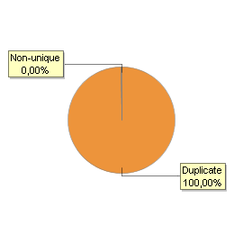

| Expression: | sector |
| Datatype: | STRING |
| Rows: | 11.853.782 |

Counts
| Type | Count |
| Non-null values: | 11.853.782 |
| Null values: | 0 |
| Distinct values: | 11 |
| Duplicate values: | 11.853.771 |
| Unique values: | 0 |
| Non-unique values: | 11 |
Statistics
| Type | value |
| Minimum value: | \N |
| Median value: | \N |
| Maximum value: | SERVICIOS NO FINANCIEROS |
| Minimum length: | 2 |
| Median length: | 2 |
| Average length: | 6,7 |
| Maximum length: | 24 |
Extremes
| First Values: |
| \N |
| AGROINDUSTRIA |
| COMERCIO |
| CONSTRUCCION |
| GOBIERNO |
| Last Values: |
| MEDIOS DE COMUNICACION |
| PERSONAS |
| RECURSOS NATURALES |
| SERVICIOS FINANCIEROS |
| SERVICIOS NO FINANCIEROS |